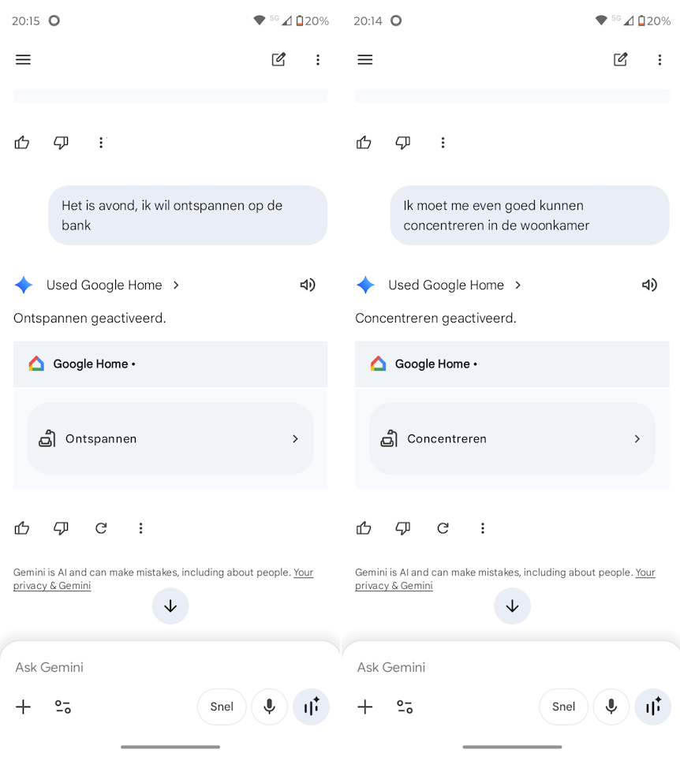

Google Assistant was jarenlang vooral een systeem van commando’s. Je zei iets op de juiste manier, noemde het juiste apparaat en hoopte dat je slimme speaker precies begreep wat je bedoelde. Gemini voor Home verschuift dat uitgangspunt: niet meer jij die je moet aanpassen aan het systeem, maar een systeem dat beter probeert te begrijpen wat jij bedoelt.
Dat verschil lijkt klein, maar in een smart home is het juist belangrijk. Een slim huis voelt pas echt slim als je niet steeds hoeft na te denken over exacte apparaatnamen, vaste zinnen en losse routines. Gemini voor Home moet die bediening natuurlijker maken, vooral bij spraak, automatiseringen en slimme beveiliging.
Kort samengevat
Gemini voor Home maakt van spraakbediening meer een gesprek dan een lijst commando’s. De belofte is dat je vrijer kunt praten, beter kunt bijsturen en minder afhankelijk bent van exacte formuleringen. De uitrol gebeurt wel stap voor stap: per account, woning, apparaat, regio en soms abonnement.
Wat is Gemini voor Home?
Gemini voor Home is de nieuwe AI-assistent voor het Google Home-ecosysteem. Google positioneert deze assistent als opvolger van Google Assistant op geschikte speakers, displays en andere smart-home-apparaten.
De basis blijft herkenbaar: je gebruikt nog steeds je stem om lampen, muziek, timers, routines en andere functies te bedienen. Het verschil zit vooral in de manier waarop de assistent taal begrijpt. Gemini moet beter omgaan met gewone zinnen, samengestelde opdrachten en vervolgvragen.
- Natuurlijke taal → je hoeft minder vaak exacte commando’s te onthouden
- Meer context → vervolgvragen en correcties moeten logischer worden begrepen
- Slimmere hulp in huis → naast bediening komt er meer nadruk op uitleg, samenvattingen en automatisering

Waarom is dit relevant voor Google Home-gebruikers?
Wie Google Home gebruikt, kent waarschijnlijk het verschil tussen een slimme opdracht en een opdracht die net verkeerd wordt begrepen. Een lamp heet anders dan je dacht, een kamernaam wordt verkeerd geïnterpreteerd of je moet een routine precies zo uitspreken als je hem ooit hebt ingesteld.
Gemini voor Home probeert die afstand kleiner te maken. In plaats van alleen losse opdrachten uit te voeren, moet de assistent beter begrijpen wat je bedoelt in de context van je huis. Dat maakt vooral verschil bij meerdere apparaten, kamers en situaties waarin je snel iets wilt aanpassen.
Wat merk je hiervan in de praktijk?
Het duidelijkste verschil merk je bij spraakbediening. Waar Google Assistant vooral sterk was in vaste opdrachten, moet Gemini beter kunnen omgaan met normale spreektaal. Je kunt dan bijvoorbeeld vragen om het licht gezelliger te maken, zonder meteen een exact dimpercentage of kleurtemperatuur te noemen.
Ook bij slimme beveiliging en de Google Home-app wordt Gemini belangrijker. Denk aan beter zoeken in cameragebeurtenissen, slimmere samenvattingen van wat er thuis is gebeurd en hulp bij het maken of aanpassen van automatiseringen. Voor een huis met meerdere kamers, Nest-apparaten en routines kan dat interessanter zijn dan voor iemand die Google Home alleen gebruikt voor een timer of een losse lamp.
Waar moet je op letten?
De overstap naar Gemini voor Home is geen simpele knop waarmee alles ineens perfect werkt. Google rolt functies gefaseerd uit en maakt onderscheid tussen verschillende previewprogramma’s, apparaten en abonnementen. Daardoor kan de ene gebruiker een instelling al zien, terwijl die bij iemand anders nog ontbreekt.
- Niet alle functies zijn overal tegelijk beschikbaar
- De ervaring kan verschillen per speaker, display, camera, account of regio
- Sommige geavanceerde camerafuncties en samenvattingen vallen onder Google Home Premium
Dat maakt het verstandig om niet alleen naar de belofte te kijken, maar ook naar je eigen gebruik. Gebruik je Google Home vooral voor simpele lampen, timers en muziek, dan merk je mogelijk minder verschil dan iemand met veel routines, camera’s en meerdere kamers.
Wat verandert er ten opzichte van Google Assistant?
Het grootste verschil is de verschuiving van commando naar intentie. Google Assistant werkte vooral goed wanneer je wist wat je moest zeggen. Gemini voor Home moet beter snappen wat je bedoelt, ook als je opdracht minder strak geformuleerd is.
Daarnaast wordt Google Home meer dan alleen een bedieningslaag. Met Gemini komt er meer nadruk op hulp bij situaties in huis: iets uitleggen, een gebeurtenis samenvatten, een automatisering voorstellen of camerabeelden begrijpelijker maken.
Volgende stap
Wil je met Gemini voor Home aan de slag, controleer dan eerst of je Google Home-app actueel is. Kijk daarna niet alleen naar één instelling, maar naar drie plekken: je Home-instellingen, je inbox in de Google Home-app en de preview- of early-accessopties die Google voor jouw account toont. De exacte zichtbaarheid kan per account verschillen, omdat Google de overstap niet in één keer voor iedereen tegelijk openzet.
- Gebruik je Google Home vooral voor spraakbediening? Test dan eerst simpele opdrachten zoals verlichting, muziek en timers.
- Gebruik je Nest-camera’s? Let dan vooral op functies rond gebeurtenissen, meldingen en terugzoeken.
- Werk je ook met Homey? Dan blijft Homey interessant als centrale automatiseringslaag naast Google Home-spraakbediening.
Gemini voor Home early access: waar kijk je?
Early access is vooral bedoeld om aan te geven dat je nieuwe Gemini-functies voor Google Home eerder wilt proberen zodra ze voor jouw huis beschikbaar komen. Dat is iets anders dan de gewone Public Preview van de Google Home-app. Public Preview draait meer om nieuwe appfuncties en interfacewijzigingen; early access voor Gemini voor Home gaat specifiek over de overstap naar de nieuwe spraakassistent en bijbehorende Gemini-functies.
De meest logische plek om te kijken is de Google Home-app. Open de app, tik rechtsboven op je profielfoto of initiaal, ga naar Home-instellingen en kijk of daar een onderdeel Early Access zichtbaar is. Via die route kun je aangeven dat je belangstelling hebt voor Gemini voor Home. Zie je deze optie niet, dan betekent dat niet automatisch dat je iets verkeerd hebt ingesteld. Het kan simpelweg nog niet beschikbaar zijn voor jouw account, woning of regio.
Wanneer Gemini voor Home daadwerkelijk klaarstaat voor jouw huis, kan Google een melding tonen met de strekking dat Gemini voor Home beschikbaar is. Daarnaast kan er in de Google Home-app een banner of bericht in de inbox verschijnen waarmee je de installatie alsnog kunt starten. Praktisch gezien zijn dit dus de plekken om af en toe te controleren:
- Google Home-app → profiel → Home-instellingen → Early Access voor aanmelding of interesse
- Google Home-app → inbox of meldingen voor een uitnodiging of setupbericht
- Home-instellingen → Gemini voor Home-spraakassistent zodra je huis is overgezet
Let ook op het account dat je gebruikt. Google koppelt dit soort functies aan je Google-account en aan je woning in de Home-app. Gebruik je meerdere accounts, een gedeeld huishouden of een Google Workspace-account, dan kan dat invloed hebben op wat je wel of niet ziet. Werk daarom bij voorkeur vanuit het account waarmee je normaal je Google Home-woning beheert.
Praktische tip
Zie je Early Access of Gemini voor Home nog niet? Update eerst de Google Home-app, controleer of je met het juiste Google-account bent ingelogd en kijk later opnieuw. Bij gefaseerde uitrol is wachten soms simpelweg onderdeel van het proces.
Conclusie
Gemini voor Home is een duidelijke stap richting een slimmer en natuurlijker bedienbaar smart home. De grootste winst zit niet in één losse functie, maar in de manier waarop je met je huis praat: minder nadenken over exacte commando’s en meer sturen op wat je wilt bereiken. Tegelijk blijft het een ontwikkeling in beweging. Beschikbaarheid, taalondersteuning, apparaatondersteuning en betaalde functies bepalen voorlopig hoeveel je er in de praktijk van merkt.